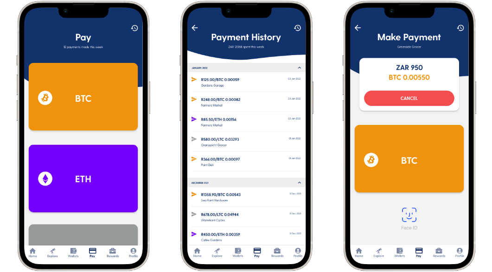
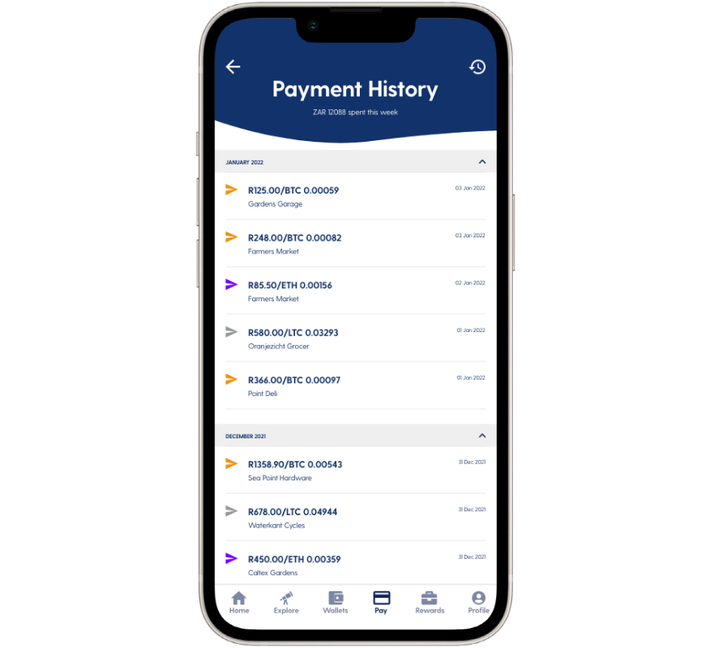

Luno Tap to Pay
Practical Crypto
Product Designer | UI/UX Designer


Pay with Crypto in Seconds
Cryptocurrencies are becoming a more commonly accepted form of payment, however many people view payment via crypto to be relatively difficult. Luno Tap-to-Pay allows users to pay with cryptocurrency, using any NFC-enabled device and card reader.
The design for Tap-to-Pay was inspired by other NFC payment platforms, such as Apple Wallet. It works as follows:
- For each currency a user holds in their Luno account, a virtual “card” can be created
- When paying at a merchant, the user can open the Luno app, select their desired card (i.e. desired payment currency), and tap to pay with their smartphone, as if they were tapping a bank card
- Authentication can be provided by means of a passcode or biometrics
- Behind the scenes, Luno converts the ZAR price of the purchase to the cryptocurrency and deducts that amount from the user’s cryptocurrency wallet
Brand Uniformity
The visual design of Luno Tap-to-Pay was carefully orchestrated around Luno’s design language, providing uniformity, and establishing a sense of trust for the user.
